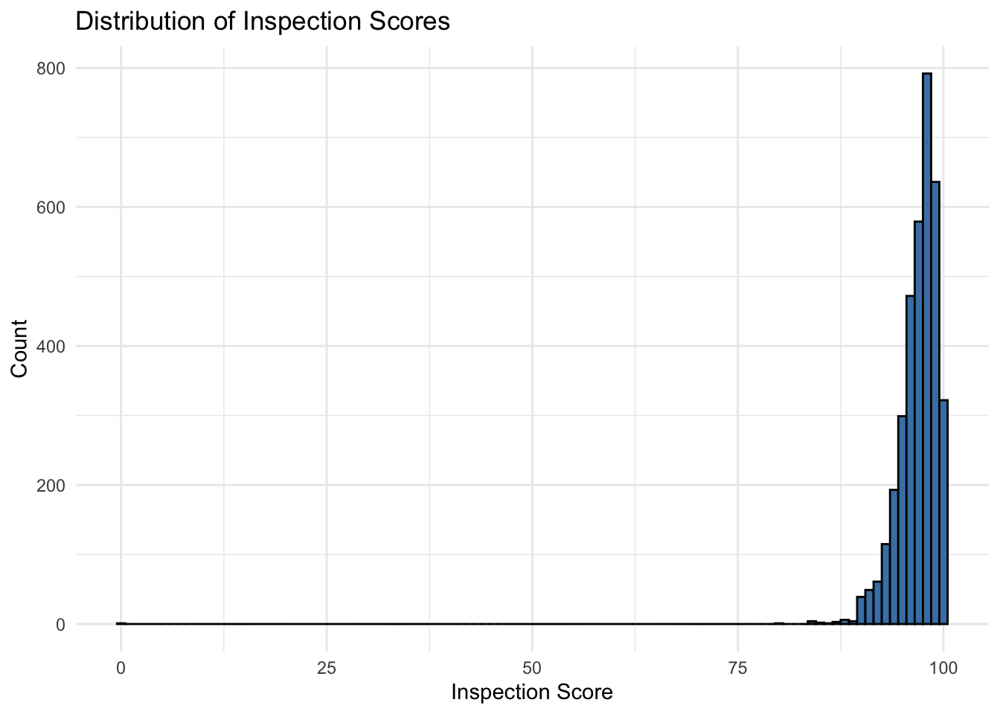
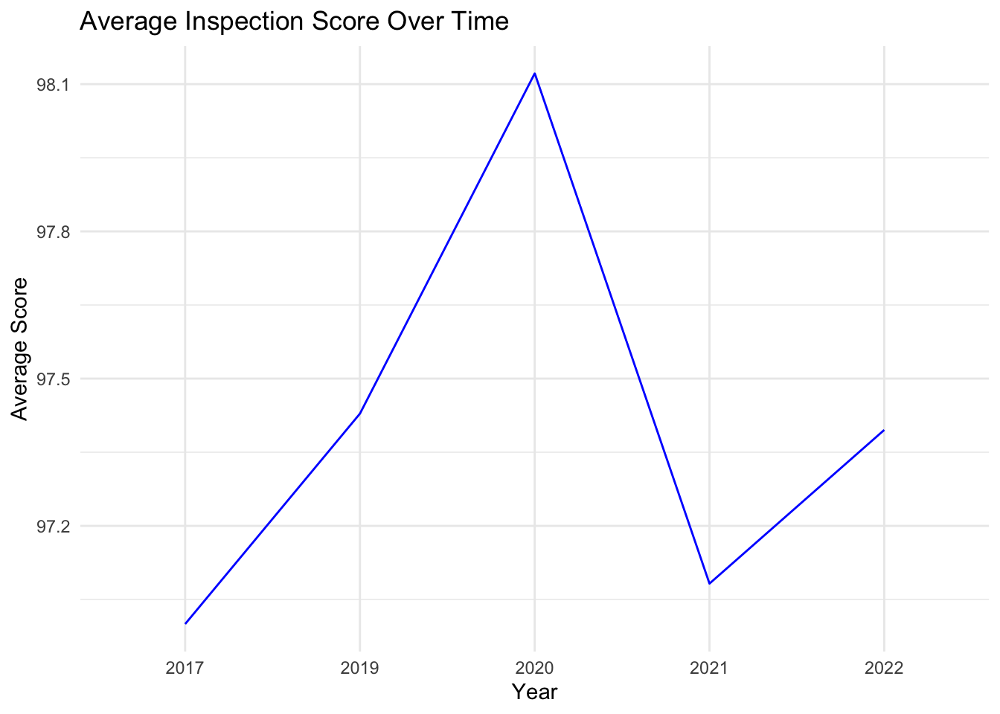
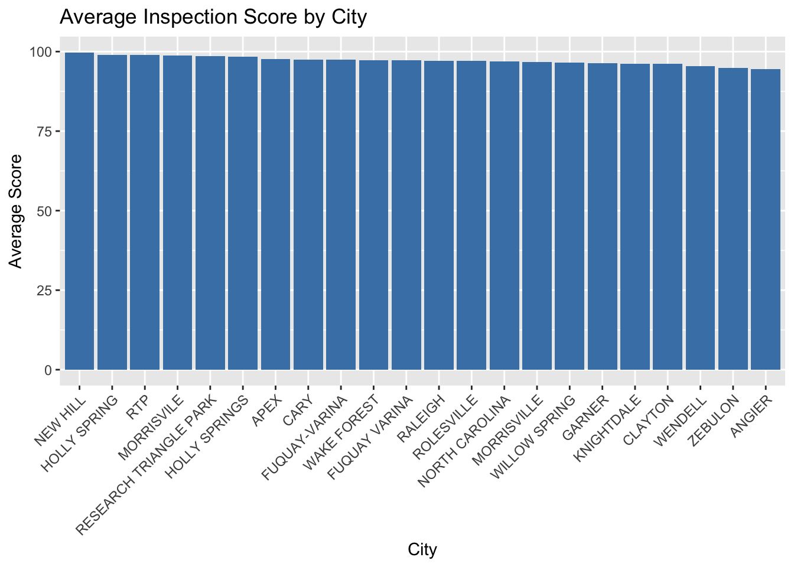
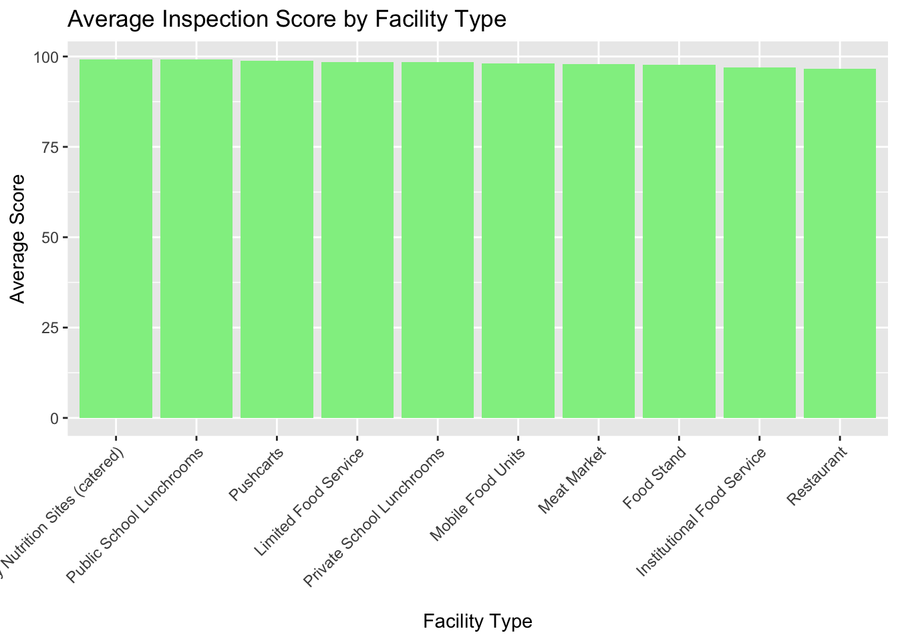
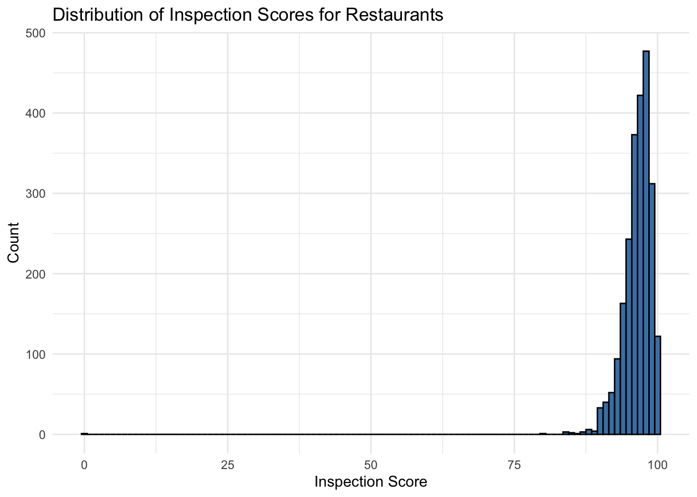
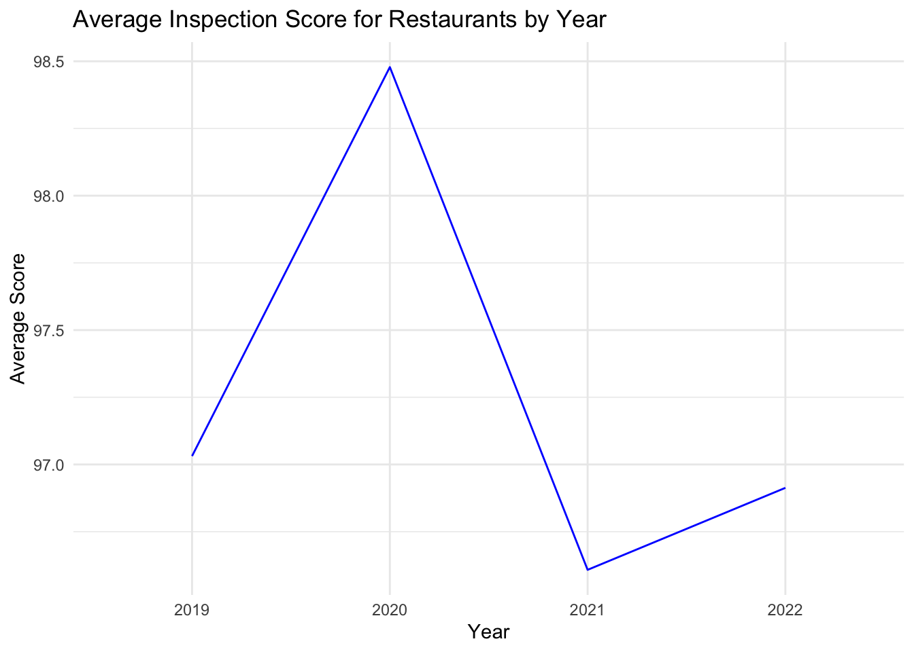

1 + 1[1] 2Quarto enables you to weave together content and executable code into a finished document. To learn more about Quarto see https://quarto.org.
When you click the Render button a document will be generated that includes both content and the output of embedded code. You can embed code like this:
1 + 1[1] 2You can add options to executable code like this
[1] 4The echo: false option disables the printing of code (only output is displayed).
This document analyzes a restaurant inspections dataset. The analysis includes data loading, exploration, cleaning, and visualizations to answer several questions related to inspection scores, trends over time, comparisons by city, inspector, facility type, and a focused analysis on restaurants.
We start by loading the required libraries.
library(readr) # for reading CSV files
library(dplyr) # for data manipulation
Attaching package: 'dplyr'The following objects are masked from 'package:stats':
filter, lagThe following objects are masked from 'package:base':
intersect, setdiff, setequal, unionlibrary(ggplot2) # for plotting
library(stringr) # for string manipulationCheck the current working directory and load the dataset.
# Check current working directory
getwd()[1] "/Users/SchoolAccount/Desktop/plan372_hm1repo/plan372_hmks/hw2"# Load the dataset
restaruant_data <- read_csv("/Users/SchoolAccount/Desktop/plan372_hm1repo/HWS/restaurant_inspections_geo.csv")Rows: 3875 Columns: 14
── Column specification ────────────────────────────────────────────────────────
Delimiter: ","
chr (8): HSISID, DESCRIPTION, TYPE, INSPECTOR, NAME, RESTAURANTOPENDATE, CI...
dbl (5): OBJECTID, SCORE, PERMITID, geocode_lon, geocode_lat
dttm (1): DATE_
ℹ Use `spec()` to retrieve the full column specification for this data.
ℹ Specify the column types or set `show_col_types = FALSE` to quiet this message.Examine the dataset by checking its dimensions, the first few rows, summary statistics, column names, and overall structure.
# Dimensions of the dataset: number of rows and columns
dim(restaruant_data)[1] 3875 14# Display the first six rows of the dataset
head(restaruant_data)# A tibble: 6 × 14
OBJECTID HSISID SCORE DATE_ DESCRIPTION TYPE INSPECTOR PERMITID
<dbl> <chr> <dbl> <dttm> <chr> <chr> <chr> <dbl>
1 25137654 04092… 97 2017-10-22 04:00:00 <NA> Insp… Karla Cr… 13405
2 25115128 04092… 96 2019-02-27 05:00:00 "*Notice* … Insp… Meghan S… 13939
3 25123164 04092… 98.5 2019-03-04 05:00:00 "*NOTICE* … Insp… Kaitlyn … 20554
4 25128895 04092… 90.5 2019-03-23 04:00:00 "Opening c… Insp… Angela M… 15506
5 25124786 04092… 97.5 2019-04-24 04:00:00 "*NOTICE* … Insp… Patricia… 14839
6 25108274 04092… 98 2019-05-14 04:00:00 "*NOTICE* … Insp… Maria Po… 8851
# ℹ 6 more variables: NAME <chr>, RESTAURANTOPENDATE <chr>, CITY <chr>,
# FACILITYTYPE <chr>, geocode_lon <dbl>, geocode_lat <dbl># Summary of numeric columns
summary(restaruant_data) OBJECTID HSISID SCORE
Min. :25091064 Length:3875 Min. : 0.00
1st Qu.:25102773 Class :character 1st Qu.: 95.50
Median :25118689 Mode :character Median : 97.50
Mean :25116443 Mean : 96.92
3rd Qu.:25129320 3rd Qu.: 98.50
Max. :25139899 Max. :100.00
DATE_ DESCRIPTION TYPE
Min. :2017-10-22 04:00:00.00 Length:3875 Length:3875
1st Qu.:2021-08-20 04:00:00.00 Class :character Class :character
Median :2021-10-28 04:00:00.00 Mode :character Mode :character
Mean :2021-09-26 21:08:39.32
3rd Qu.:2021-12-14 05:00:00.00
Max. :2022-01-31 05:00:00.00
INSPECTOR PERMITID NAME RESTAURANTOPENDATE
Length:3875 Min. : 1 Length:3875 Length:3875
Class :character 1st Qu.: 6136 Class :character Class :character
Mode :character Median :12872 Mode :character Mode :character
Mean :12285
3rd Qu.:18374
Max. :23602
CITY FACILITYTYPE geocode_lon geocode_lat
Length:3875 Length:3875 Min. :-78.94 Min. : 0.00
Class :character Class :character 1st Qu.:-78.78 1st Qu.:35.75
Mode :character Mode :character Median :-78.66 Median :35.80
Mean :-77.74 Mean :35.37
3rd Qu.:-78.60 3rd Qu.:35.85
Max. : 0.00 Max. :36.05
NA's :296 NA's :296 # Names of the columns
names(restaruant_data) [1] "OBJECTID" "HSISID" "SCORE"
[4] "DATE_" "DESCRIPTION" "TYPE"
[7] "INSPECTOR" "PERMITID" "NAME"
[10] "RESTAURANTOPENDATE" "CITY" "FACILITYTYPE"
[13] "geocode_lon" "geocode_lat" # Structure of the dataset (includes types of each column)
str(restaruant_data)spc_tbl_ [3,875 × 14] (S3: spec_tbl_df/tbl_df/tbl/data.frame)
$ OBJECTID : num [1:3875] 25137654 25115128 25123164 25128895 25124786 ...
$ HSISID : chr [1:3875] "04092021735" "04092013943" "04092021636" "04092021737" ...
$ SCORE : num [1:3875] 97 96 98.5 90.5 97.5 98 100 99.5 100 90.5 ...
$ DATE_ : POSIXct[1:3875], format: "2017-10-22 04:00:00" "2019-02-27 05:00:00" ...
$ DESCRIPTION : chr [1:3875] NA "*Notice* Effective January 1, 2019, the NC Food Code 3-501.16 (A)(2)(b)(ii) NOW requires equipment to be upgrad"| __truncated__ "*NOTICE* AS OF JANUARY 1, 2019, THE NC FOOD CODE 3-501.16 (A)(2)(b)(ii) NOW REQUIRES EQUIPMENT TO BE UPGRADED O"| __truncated__ "Opening check list is needed so that management is aware of deficiencies (such as No paper towels). Food temper"| __truncated__ ...
$ TYPE : chr [1:3875] "Inspection" "Inspection" "Inspection" "Inspection" ...
$ INSPECTOR : chr [1:3875] "Karla Crowder" "Meghan Scott" "Kaitlyn Yow" "Angela Myers" ...
$ PERMITID : num [1:3875] 13405 13939 20554 15506 14839 ...
$ NAME : chr [1:3875] "THE CENTERLINE CAFE" "St. Raphael Hall Foodservice" "KNIGHTDALE HIGH SCHOOL BASEBALL CONCESSIONS" "CORNER KICK CAFE" ...
$ RESTAURANTOPENDATE: chr [1:3875] "2013/02/01 05:00:00+00" "2003/12/01 05:00:00+00" "2010/12/08 05:00:00+00" "2013/02/20 05:00:00+00" ...
$ CITY : chr [1:3875] "CARY" "RALEIGH" "KNIGHTDALE" "CARY" ...
$ FACILITYTYPE : chr [1:3875] "Food Stand" "Restaurant" "Food Stand" "Food Stand" ...
$ geocode_lon : num [1:3875] -78.8 -78.6 -78.5 -78.8 0 ...
$ geocode_lat : num [1:3875] 35.8 35.9 35.8 35.8 0 ...
- attr(*, "spec")=
.. cols(
.. OBJECTID = col_double(),
.. HSISID = col_character(),
.. SCORE = col_double(),
.. DATE_ = col_datetime(format = ""),
.. DESCRIPTION = col_character(),
.. TYPE = col_character(),
.. INSPECTOR = col_character(),
.. PERMITID = col_double(),
.. NAME = col_character(),
.. RESTAURANTOPENDATE = col_character(),
.. CITY = col_character(),
.. FACILITYTYPE = col_character(),
.. geocode_lon = col_double(),
.. geocode_lat = col_double()
.. )
- attr(*, "problems")=<externalptr> Count missing values per column, filter out rows with missing values in vital columns (CITY, FACILITYTYPE, SCORE), and check for duplicate rows.
# Count missing data in each column
colSums(is.na(restaruant_data)) OBJECTID HSISID SCORE DATE_
0 0 0 0
DESCRIPTION TYPE INSPECTOR PERMITID
516 0 0 0
NAME RESTAURANTOPENDATE CITY FACILITYTYPE
296 296 296 296
geocode_lon geocode_lat
296 296 # Filter out rows with missing values in CITY, FACILITYTYPE, and SCORE
restaruant_data <- restaruant_data %>%
filter(!is.na(CITY) & !is.na(FACILITYTYPE) & !is.na(SCORE))
# Check the dimensions after filtering
dim(restaruant_data)[1] 3579 14# Check for any duplicate rows (should return 0 if there are none)
sum(duplicated(restaruant_data))[1] 0Visualize the overall distribution of inspection scores using a histogram.
ggplot(restaruant_data, aes(x = SCORE)) +
geom_histogram(binwidth = 1, fill = "steelblue", color = "black") +
labs(title = "Distribution of Inspection Scores",
x = "Inspection Score",
y = "Count") +
theme_minimal()
Investigate whether there are trends over time by extracting the year from the DATE_ column and calculating the average inspection score per year.
# Extract the year from the DATE_ column
restaruant_data$INSPECTION_YEAR <- format(restaruant_data$DATE_, "%Y")
# Group by year and calculate the average inspection score
avg_score_by_year <- restaruant_data %>%
group_by(INSPECTION_YEAR) %>%
summarize(Average_Score = mean(SCORE, na.rm = TRUE))
# Plot the trend over the years
ggplot(avg_score_by_year, aes(x = INSPECTION_YEAR, y = Average_Score, group = 1)) +
geom_line(color = "blue") +
labs(title = "Average Inspection Score Over Time",
x = "Year",
y = "Average Score") +
theme_minimal()
Check if inspection scores vary by city by standardizing city names and calculating average scores.
# Standardize CITY names to uppercase
restaruant_data$CITY <- str_to_upper(restaruant_data$CITY)
# Group by CITY and calculate average inspection score and count
avg_score_by_city <- restaruant_data %>%
group_by(CITY) %>%
summarize(Average_Score = mean(SCORE, na.rm = TRUE), Count = n())
# Create a bar plot for average scores by city
ggplot(avg_score_by_city, aes(x = reorder(CITY, -Average_Score), y = Average_Score)) +
geom_bar(stat = "identity", fill = "steelblue") +
labs(title = "Average Inspection Score by City",
x = "City",
y = "Average Score") +
theme(axis.text.x = element_text(angle = 45, hjust = 1))
Summarize the average score and the number of inspections for each inspector.
inspector_summary <- restaruant_data %>%
group_by(INSPECTOR) %>%
summarize(
Average_Score = mean(SCORE, na.rm = TRUE),
Inspection_Count = n()
) %>%
arrange(desc(Average_Score))
# Display the inspector summary table
inspector_summary# A tibble: 39 × 3
INSPECTOR Average_Score Inspection_Count
<chr> <dbl> <int>
1 James Smith 99 1
2 Greta Welch 98.5 2
3 Kaitlyn Yow 98.5 1
4 Jason Dunn 98.5 61
5 John Wulffert 98.4 154
6 Jamie Phelps 98.2 149
7 Nicole Millard 98.1 146
8 Zachary Carter 98.1 150
9 Brittny Thomas 98 3
10 Dipatrimarki Farkas 97.8 155
# ℹ 29 more rowsExamine the sample sizes for each group (city, inspector, and year) to assess if small sample sizes might affect the results.
# Sample size by city
avg_score_by_city %>%
select(CITY, Count) %>%
arrange(Count)# A tibble: 22 × 2
CITY Count
<chr> <int>
1 ANGIER 1
2 HOLLY SPRING 1
3 NORTH CAROLINA 1
4 RESEARCH TRIANGLE PARK 1
5 RTP 1
6 MORRISVILE 2
7 NEW HILL 2
8 WILLOW SPRING 2
9 CLAYTON 4
10 ROLESVILLE 24
# ℹ 12 more rows# Inspectors with less than 5 inspections
inspector_summary %>%
filter(Inspection_Count < 5)# A tibble: 5 × 3
INSPECTOR Average_Score Inspection_Count
<chr> <dbl> <int>
1 James Smith 99 1
2 Greta Welch 98.5 2
3 Kaitlyn Yow 98.5 1
4 Brittny Thomas 98 3
5 Thomas Jumalon 89 3# Sample size by year
yearly_sample_size <- restaruant_data %>%
group_by(INSPECTION_YEAR) %>%
summarize(Inspection_Count = n()) %>%
arrange(INSPECTION_YEAR)
# Display the sample size by year
yearly_sample_size# A tibble: 5 × 2
INSPECTION_YEAR Inspection_Count
<chr> <int>
1 2017 1
2 2019 28
3 2020 37
4 2021 2853
5 2022 660Determine whether the scores for restaurants are higher than for other types of food-service facilities by grouping by FACILITYTYPE.
# Group by FACILITYTYPE and calculate average score and count
facility_summary <- restaruant_data %>%
group_by(FACILITYTYPE) %>%
summarize(
Average_Score = mean(SCORE, na.rm = TRUE),
Inspection_Count = n()
) %>%
arrange(desc(Average_Score))
# View the facility summary table
facility_summary# A tibble: 10 × 3
FACILITYTYPE Average_Score Inspection_Count
<chr> <dbl> <int>
1 Elderly Nutrition Sites (catered) 99.2 8
2 Public School Lunchrooms 99.2 185
3 Pushcarts 98.8 39
4 Limited Food Service 98.5 1
5 Private School Lunchrooms 98.5 13
6 Mobile Food Units 98.1 181
7 Meat Market 98.0 93
8 Food Stand 97.7 661
9 Institutional Food Service 96.9 46
10 Restaurant 96.7 2352# Bar plot of average score by facility type
ggplot(facility_summary, aes(x = reorder(FACILITYTYPE, -Average_Score), y = Average_Score)) +
geom_bar(stat = "identity", fill = "lightgreen") +
labs(title = "Average Inspection Score by Facility Type",
x = "Facility Type",
y = "Average Score") +
theme(axis.text.x = element_text(angle = 45, hjust = 1))
Repeat the analyses above for restaurants only by first filtering the dataset.
# Filter the data for restaurants only
restaruant_only <- restaruant_data %>%
filter(FACILITYTYPE == "Restaurant")
# Check the number of observations for restaurants
nrow(restaruant_only)[1] 2352ggplot(restaruant_only, aes(x = SCORE)) +
geom_histogram(binwidth = 1, fill = "steelblue", color = "black") +
labs(title = "Distribution of Inspection Scores for Restaurants",
x = "Inspection Score",
y = "Count") +
theme_minimal()
Extract the year for restaurants and plot the average inspection score by year.
# Extract the year from the DATE_ column for restaurants
restaruant_only$INSPECTION_YEAR <- format(restaruant_only$DATE_, "%Y")
# Group by year and calculate the average score for restaurants
avg_score_restaurants_by_year <- restaruant_only %>%
group_by(INSPECTION_YEAR) %>%
summarize(Average_Score = mean(SCORE, na.rm = TRUE))
# Plot the trend over the years for restaurants
ggplot(avg_score_restaurants_by_year, aes(x = INSPECTION_YEAR, y = Average_Score, group = 1)) +
geom_line(color = "blue") +
labs(title = "Average Inspection Score for Restaurants by Year",
x = "Year",
y = "Average Score") +
theme_minimal()
# Group by CITY and calculate average score and count for restaurants
avg_score_restaurants_by_city <- restaruant_only %>%
group_by(CITY) %>%
summarize(Average_Score = mean(SCORE, na.rm = TRUE), Count = n())
# Display the table for restaurants by city
avg_score_restaurants_by_city# A tibble: 21 × 3
CITY Average_Score Count
<chr> <dbl> <int>
1 ANGIER 94.5 1
2 APEX 97.1 108
3 CARY 97.3 406
4 CLAYTON 93 1
5 FUQUAY VARINA 96.9 49
6 FUQUAY-VARINA 97.0 27
7 GARNER 95.8 93
8 HOLLY SPRING 99 1
9 HOLLY SPRINGS 98.0 79
10 KNIGHTDALE 95.1 49
# ℹ 11 more rows# Group by INSPECTOR and calculate average score and inspection count for restaurants
inspector_summary_restaurants <- restaruant_only %>%
group_by(INSPECTOR) %>%
summarize(
Average_Score = mean(SCORE, na.rm = TRUE),
Inspection_Count = n()
) %>%
arrange(desc(Average_Score))
# Display the inspector summary table for restaurants
inspector_summary_restaurants# A tibble: 38 × 3
INSPECTOR Average_Score Inspection_Count
<chr> <dbl> <int>
1 James Smith 99 1
2 Greta Welch 98.5 2
3 John Wulffert 98.1 111
4 Brittny Thomas 98 3
5 Jamie Phelps 97.9 108
6 Zachary Carter 97.8 100
7 Dipatrimarki Farkas 97.7 118
8 Loc Nguyen 97.6 74
9 Ginger Johnson 97.6 35
10 Nicole Millard 97.6 48
# ℹ 28 more rowsExamine sample sizes by city, inspector, and year for the restaurant-only subset.
# Sample size by city for restaurants
avg_score_restaurants_by_city %>%
select(CITY, Count) %>%
arrange(Count)# A tibble: 21 × 2
CITY Count
<chr> <int>
1 ANGIER 1
2 CLAYTON 1
3 HOLLY SPRING 1
4 MORRISVILE 1
5 NEW HILL 1
6 RESEARCH TRIANGLE PARK 1
7 RTP 1
8 WILLOW SPRING 1
9 ROLESVILLE 13
10 WENDELL 20
# ℹ 11 more rows# Inspectors with fewer than 5 inspections among restaurants
inspector_summary_restaurants %>%
filter(Inspection_Count < 5)# A tibble: 5 × 3
INSPECTOR Average_Score Inspection_Count
<chr> <dbl> <int>
1 James Smith 99 1
2 Greta Welch 98.5 2
3 Brittny Thomas 98 3
4 Jason Dunn 97.1 4
5 Thomas Jumalon 88 2# Sample size by year for restaurants
yearly_sample_size_restaurants <- restaruant_only %>%
group_by(INSPECTION_YEAR) %>%
summarize(Inspection_Count = n()) %>%
arrange(INSPECTION_YEAR)
# Display the sample size by year for restaurants
yearly_sample_size_restaurants# A tibble: 4 × 2
INSPECTION_YEAR Inspection_Count
<chr> <int>
1 2019 16
2 2020 23
3 2021 1916
4 2022 397This document provided an exploratory analysis of a restaurant inspections dataset, including visualizations and summary statistics by various dimensions such as city, inspector, and facility type. The analysis was then repeated for restaurants specifically to gain deeper insights. Further analysis may extend these findings to uncover more detailed trends and patterns.